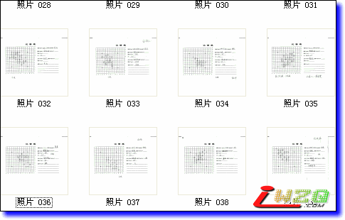
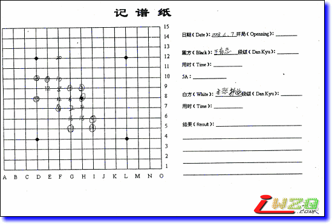
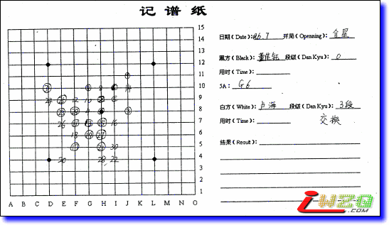

征集2008第二届全国团体赛棋谱工作义工
#1 征集2008第二届全国团体赛棋谱工作义工 作者：有志青年 发表时间：2008-8-27 12:55:36
本站独家提供2008第二届全国团体赛的对局棋谱！
目前收到的均是赛场棋谱记录单的扫描文件

正在逐谱添加，工作量很大，部分记录单较难识别。
全部添加完毕后将可以打包下载到本地合并成lib多分枝棋谱。
现公开征集棋谱录入的义工！
工种一：棋谱纠错
工作内容：对已经录入的棋谱进行纠错
工作方式：本贴回复时指出
工作回报：一经确认，每次奖励威望1
工种二：棋谱录入
报名方式：跟帖说明，留下个人信息（qq号码、email地址、个人简简简介）
报名条件：本站威望达到5，最多10人
分配方式：根据棋谱总量，平均分配，大约每人每天5个谱（预计最长一个小时的录入时间）
提交方式：参照如何在帖子中添加棋谱帖子，在本贴后回复提交，提交格式如下：（为了保证棋谱录入没有问题，我将会逐谱核对，正确无误后才添加到本站的棋谱库中）
=======上图对应的爱五子棋谱代码如下，以便你拆解：========
h8h9j10i9k9i11j8i7j9i8i10j7g10k10l7k8i6l5k6j5k5f10l9l8e9f7g7g6f8d10e8g8f9h11d5
======================================================
2008第二届全国团体赛第一轮对局棋谱
开局名称 疏星局 对局结果 和棋 棋局时间 2008-6-7 交换：否
5A：g9 执 黑 郑蔚楠 执 白 穆宏远
#2 Re:征集2008第二届全国团体赛棋谱录入义工 作者：oddgod 发表时间：2008-8-28 10:40:04
很想当，但威望不够……
#3 Re:征集2008第二届全国团体赛棋谱录入义工 作者：南京小飞机 发表时间：2008-8-29 23:09:04
有志 他是百度贴吧的吧主#4 Re:征集2008第二届全国团体赛棋谱录入义工 作者：雅匪 发表时间：2008-8-30 1:36:28
提前感谢了
#5 Re:征集2008第二届全国团体赛棋谱录入义工 作者：爱的礼物 发表时间：2008-8-30 12:38:49
棋谱是谁登的, 请认真点好吗,最起码别把参赛选手名字打错,胜负搞错啊［ 有志青年 于 2008-8-31 16:43:22 时奖励此帖[金币加 20 威望加1］
#6 Re:Re:征集2008第二届全国团体赛棋谱录入义工 作者：有志青年 发表时间：2008-8-30 12:56:46
引用：如有错误欢迎指正哟，知错必改！
原文由 爱的礼物 发表于 2008-8-30 12:38:49 :
棋谱是谁登的, 请认真点好吗,最起码别把参赛选手名字打错,胜负搞错啊
#7 Re:Re:征集2008第二届全国团体赛棋谱录入义工 作者：有志青年 发表时间：2008-8-31 16:48:28
引用：
原文由 爱的礼物 发表于 2008-8-30 12:38:49 :
棋谱是谁登的, 请认真点好吗,最起码别把参赛选手名字打错,胜负搞错啊［ 有志青年 于 2008-8-31 16:43:22 时奖励此帖[金币加 20 威望加1］
感谢您提出问题，根据您在棋谱库中的留言，已经再次核对棋谱记录单并做了纠正。


王有志和卢海的两局均是因为交换导致黑白无法判断，可能是我不习惯这种记谱方式吧，再次感谢，今后传谱的时候一定再严谨一些。
#8 Re:征集2008第二届全国团体赛棋谱录入义工 作者：oddgod 发表时间：2008-8-31 16:57:23
qplist.asp?qpid=2506&menu=4&returnmenu=2
戴晓涵的戴写错了
［ 有志青年 于 2008-8-31 17:02:57 时奖励此帖[金币加 20 威望加1］
#9 Re:征集2008第二届全国团体赛棋谱工作义工 作者：lfzxdh 发表时间：2008-9-6 10:12:53
我刚好可以，申请下~~
［ 有志青年 于 2008-9-6 10:21:54 时奖励此帖[金币加 20 威望加1］
#10 Re:征集2008第二届全国团体赛棋谱工作义工 作者：oddgod 发表时间：2008-9-13 1:54:04
qplist.asp?qpid=2549&menu=4&returnmenu=2
樊毅默执白胜
［ 有志青年 于 2008-9-13 16:07:36 时奖励此帖[金币加 20 威望加1］
#11 Re:征集2008第二届全国团体赛棋谱工作义工 作者：lfzxdh 发表时间：2008-9-13 9:40:04
交换了的呀，
记谱纸上签字有时是负的一方，有时是记谱的人在上面签字，很郁闷
#12 Re:征集2008第二届全国团体赛棋谱工作义工 作者：越狱行辕 发表时间：2008-9-13 19:21:45
| 诺亚人力资源杯2008年全国五子棋团体赛第三轮对局棋谱 | 疏星局 | 吴恺 |
［ 有志青年 于 2008-9-13 20:25:49 时奖励此帖[金币加 20 威望加1］
#13 Re:征集2008第二届全国团体赛棋谱工作义工 作者：越狱行辕 发表时间：2008-9-13 19:23:22
残月那盘是峡月 主页上［ 有志青年 于 2008-9-13 20:22:24 时奖励此帖[金币加 20 威望加1］
#14 Re:征集2008第二届全国团体赛棋谱工作义工 作者：nara 发表时间：2008-9-13 23:07:04
qplist.asp?qpid=2561&menu=4&returnmenu=2
从盘面看是黑胜吧,怎么对局结果是白胜.
#15 Re:征集2008第二届全国团体赛棋谱工作义工 作者：lfzxdh 发表时间：2008-9-14 10:22:58
低级错误，是黑胜
#16 Re:征集2008第二届全国团体赛棋谱工作义工 作者：我爱五子棋伯园 发表时间：2008-10-15 8:45:38
大家切忌耐心，不要错误连连